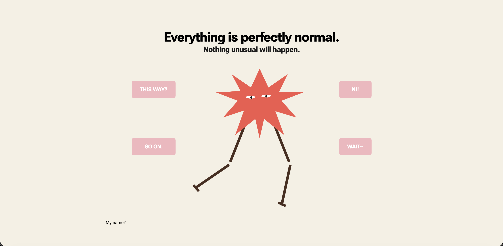

CSS to the Rescue
Project omschrijving
CSS to the Rescue had één grote beperking: geen JavaScript, geen ID's en geen classes. Ik koos voor de richting Silly Walk als eerbetoon aan Monty Python. Het resultaat is een ster met benen die een silly walk uitvoert, met vier interactieve knoppen die de stijl en het gedrag aanpassen, met 16 mogelijke combinaties die allemaal zijn uitgewerkt. Alles via pure CSS.
Plannen, ontwikkelingen en reflecties
Ik was de eerste week ziek, dus ik ben wat later begonnen dan ik wilde. In de vakantie bedacht ik het concept: een ster met lange benen die een silly walk doet. Ik ben begonnen met clip-path om de stervorm te maken, en daarna de benen laten bewegen met CSS animaties. Dat klinkt simpeler dan het is: alles heeft invloed op elkaar, en zonder classes of ID's moet je heel slim nadenken over hoe je elementen selecteert.
Via container style queries kon ik de vier knoppen combineren tot 16 unieke states, elk met hun eigen achtergrond, animatiesnelheid en tekst. Ik heb Monty Python quotes opgezocht en die per state verwerkt in de titels en knoppen. De ster draait, loopt van links naar rechts, draait sneller bij een 'evil' mode en heeft in een defecte staat een gestreepte achtergrond.
Ik heb ook gewerkt met @layer, variabele fonts, ::before en ::after, en transform-origin om de rotatie goed te positioneren. Uiteindelijk belandde ik op meer dan 2.500 regels CSS. Voor iemand die dacht dat CSS simpel was, was dit een eye-opener.
Afbeeldingen




Uitkomsten en inzichten
Dit project heeft me laten zien hoe krachtig CSS eigenlijk is als je er echt induikt. Container style queries, @layer, variabele fonts, clip-path, dingen die ik voorheen niet kende of nooit had gebruikt. De beperking van geen JavaScript dwong me om creatief te denken en meer uit CSS te halen dan ik voor mogelijk hield.
Ik vond het ook leuk om iets grappigs te maken en me te verdiepen in Monty Python. De combinatie van technische uitdaging en humor maakte dit project één van mijn favorieten van de minor.